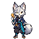
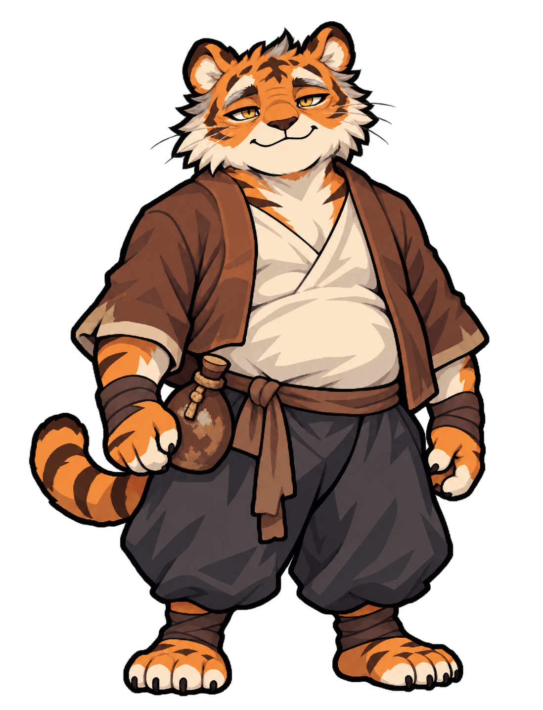
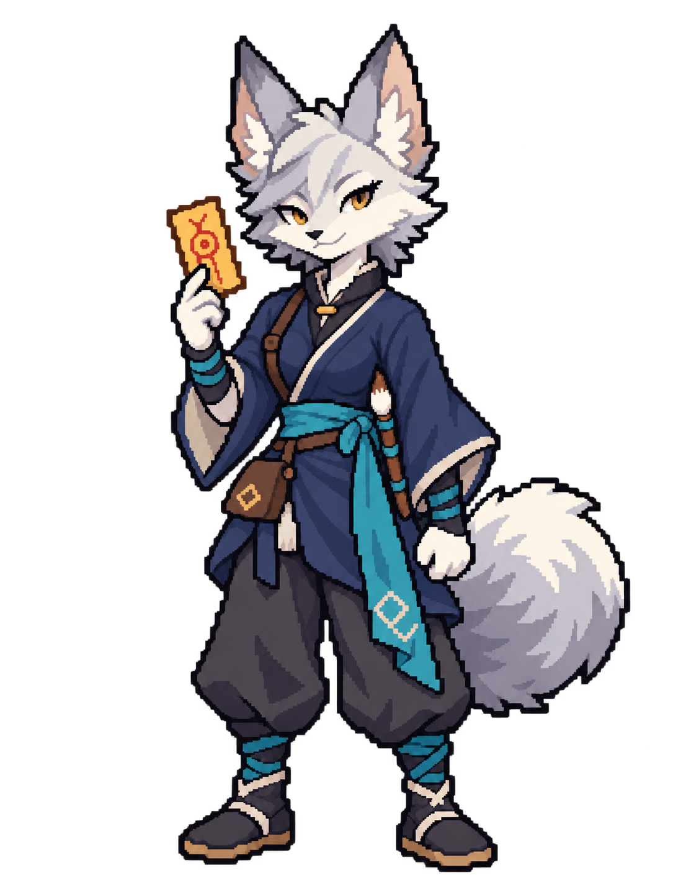

현재 64×64 원본
이계취호전 · 첫 동료 외형
연묵, 여우 수인 여성 부적술사
회백색 털과 남색 여행복, 청록 띠. 아타호 옆에서 같은 세계의 동료로 보이는지 확인해 주세요.
전면 도트 후보 01 · 외형 기준 04게임 크기의 전면 후보
같은 64×64 캔버스를 원래 크기와 4배 정수 배율로 봅니다. 양발 바닥은 y=62입니다.
04 디자인 기준 · 첫 전면 도트
연묵

흰 얼굴·청록 띠·부적·꼬리가 읽히는 첫 후보입니다. JS 내보내기에서 알파를 0/255로, 팔레트를 63색과 투명색 한 칸으로 정리했습니다.
외형 기준 컨셉 비교
첨부 도트 기준 · 얼굴 연령감 수정안04
아타호

둥근 나이살 · 세월이 읽히는 얼굴 · 편안한 미소
비교용 컨셉04 · 1098 × 1433 PNG
승인한 외형 기준04
연묵

회백색 털 · 남색 옷 · 날렵한 부적술사
승인 컨셉04 · 1098 × 1433 PNG
현재 아타호의 도트를 연묵04의 그림체로 확장한 컨셉입니다. 두 컨셉을 같은 높이의 카드에 표시하며, 게임 속 키·표시 배율을 뜻하지 않습니다.
외형부터 확인해요
연묵은 젊은 성인 여성 여우 수인 부적술사입니다. 자신감 있는 표정, 큰 귀·꼬리, 여행복과 부적술사 소품을 먼저 검토합니다.
연묵은 03보다 선호한 02의 얼굴·머리 모양을 기준으로, 여행복의 핏·주름과 단계 명암으로 상체·허리·골반의 굴곡만 조금 더 강조했습니다. 아타호 컨셉04는 03의 둥근 배와 느슨한 허리띠, 편안한 어깨·손, 따뜻한 작은 웃음과 은근한 술기운을 기준으로 얼굴의 연령감만 높였습니다. 눈꺼풀과 눈 밑, 눈꼬리·이마의 주름과 짧은 눈썹·관자놀이·이마 털의 회색으로 세월을 표현하고, 현재 복장과 허리 술병을 유지했습니다. 게임용 64×64 도트는 위에서, 생성한 이동·전투 모션은 상단의 연묵 모션 뷰어에서 별도로 확인할 수 있습니다.
아타호 컨셉01·02·03·04: 내장 생성 각 1회 · PixelLab 사용 없음. 연묵01~04와 게임용 전면 도트, 각 생성 원본을 함께 보존합니다.